전기산업기사 (2018-03-04 기출문제)
1과목: 전기자기학
1. 무한장 원주형 도체에 전류 I가 표면에만 흐른다면 원주 내부의 자계의 세기는 몇 AT/m 인가? (단, r[m]는 원주의 반지름이고, N은 권선수 이다.)
- 0
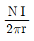
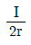
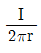
(정답률: 69%)

2. 다음이 설명하고 있는 것은?
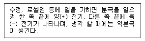
- 강유전성
- 압전기현상
- 파이로(Pyro) 전기
- 톰슨(Thomson) 효과
(정답률: 75%)
3. 비유전율이 9인 유전체 중에 1㎝의 거리를 두고 1μC과 2μC의 두 점전하가 있을 때 서로 작용하는 힘은 약 몇 N 인가?
- 18
- 20
- 180
- 200
(정답률: 66%)
4. 비투자율 ㎲, 자속밀도 B[Wb/m2]인 자계 중에 있는 m[Wb]의 자극이 받는 힘[N] 은?
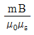
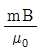
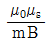
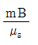
(정답률: 82%)
5. 반지름이 1m인 도체구에 최고로 줄 수 있는 전위는 몇 kV 인가? (단, 주위 공기의 절연내력은 3×106[V/m] 이다.)
- 30
- 300
- 3000
- 30000
(정답률: 73%)
6. 그림과 같은 정전용량이 C0[F]가 되는 평행판 공기콘덴서가 있다. 이 콘덴서의 판면적의 2/3가 되는 공간에 비유전율 Єs인 유전체를 채우면 공기콘덴서의 정전용량[F]은?
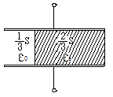
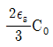
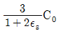
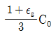
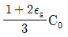
(정답률: 75%)
7. 단면적 S[m2], 자로의 길이 l[m], 투자율 μ[H/m]의 환상 철심에 1m당 N회 코일을 균등하게 감았을 때 자기 인덕턴스[H]는?
- μNlS
- μN2lS
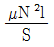
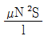
(정답률: 49%)
8. 반지름 a[m]인 접지 도체구의 중심에서 r[m]되는 거리에 점전하 Q[C]을 놓았을 때 도체구에 유도된 총 전하는 몇 C 인가?
- 0
- -Q
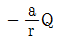
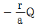
(정답률: 53%)
9. 각각 ±Q[C]로 대전된 두 개의 도체간의 전위차를 전위계수로 표시하면? (단, P12=P21이다.)
- (P11+P12+P22)Q
- (P11+P12-P22)Q
- (P11-P12+P22)Q
- (P11-2P12+P22)Q
(정답률: 68%)
10. 접지구도체와 점전하간의 작용력은?
- 항상 반발력이다.
- 항상 흡입력이다.
- 조건적 반발력이다.
- 조건적 흡입력이다.
(정답률: 84%)
11. 공기 중에서 무한평면 도체로부터 수직으로 10-10m 떨어진 점에 한 개의 전자가 있다. 이 전자에 작용하는 힘은 약 몇 N 인가? (단, 전자의 전하량 : -1.602×10-19C 이다. )
- 5.77×10-9
- 1.602×10-9
- 5.77×10-19
- 1.602×10-19
(정답률: 48%)
12. 자속밀도 B[Wb/m2]가 도체 중에서 f[Hz]로 변화할 때 도체 중에 유기되는 기전력 e는 무엇에 비례하는가?
- e∝Bf
- e∝B/f
- e∝B2/f
- e∝f/B
(정답률: 67%)
13. 유전체 중의 전계의 세기를 E, 유전율을 Є이라 하면 전기변위는?
- ЄE
- ЄE2
- Є/E
- E/Є
(정답률: 70%)
14. 맥스웰의 전자방정식으로 틀린 것은?
- divB=ø
- divD=ρ
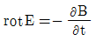
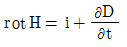
(정답률: 69%)
15. 유전율 Є, 투자율 μ인 매질 내에서 전자파의 전파속도는?
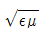
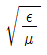
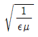
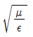
(정답률: 62%)
16. 평행판 콘덴서에서 전극간에 [V]의 전위차를 가할 때 전계의 세기가 공기의 절연내력 E[V/m]를 넘지 않도록 하기 위한 콘덴서의 단위 면적당의 최대용량은 몇 F/m2 인가?
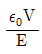
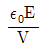
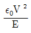
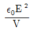
(정답률: 62%)
17. 그림과 같이 권수가 1이고 반지름 a[m]인 원형 전류 I[A]가 만드는 자계의 세기 AT/m는?
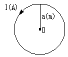
- I/a
- I/2a
- I/3a
- I/4a
(정답률: 82%)
18. 두 점전하 q, 1/2q가 a만큼 떨어져 놓여있다. 이 두 점전하를 연결하는 선상에서 전계의 세기가 영(0)이 되는 점은 q가 놓여 있는 점으로부터 얼마나 떨어진 곳인가?
- √2a
- (2-√2)a
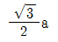
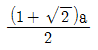
(정답률: 50%)
19. 균일한 자장 내에서 자장에 수직으로 놓여있는 직선도선이 받는 힘에 대한 설명 중 옳은 것은?
- 힘은 자장의 세기에 비례한다.
- 힘은 전류의 세기에 반비례한다.
- 힘은 도선 길이의 1/2승에 비례한다.
- 자장의 방향에 상관없이 일정한 방향으로 힘을 받는다.
(정답률: 64%)
20. 전류밀도 J, 전계 E, 입자의 이동도 μ, 도전율을 σ라 할 때 전류밀도 [A/m2]를 옳게 표현한 것은?
- J=0
- J=E
- J=σE
- J=μE
(정답률: 70%)
2과목: 전력공학
21. 차단기의 정격투입전류란 투입되는 전류의 최초 주파수의 어느 값을 말하는가?
- 평균값
- 최대값
- 실효값
- 직류값
(정답률: 69%)
22. 영상변류기와 관계가 가장 깊은 계전기는?
- 차동계전기
- 과전류계전기
- 과전압계전기
- 선택접지계전기
(정답률: 64%)
23. 전력계통에서의 단락용량 증대가 문제가 되고 있다. 이러한 단락용량을 경감하는 대책이 아닌 것은?
- 사고 시 모선을 통합한다.
- 상위전압 계통을 구성한다.
- 모선 간에 한류 리액터를 삽입한다.
- 발전기와 변압기의 임피던스를 크게 한다.
(정답률: 58%)
24. 송전계통의 안정도 증진방법에 대한 설명이 아닌 것은?
- 전압변동을 작게 한다.
- 직렬리액턴스를 크게 한다.
- 고장 시 발전기 입ㆍ출력의 불평형을 작게 한다.
- 고장전류를 줄이고 고장구간을 신속하게 차단한다.
(정답률: 78%)
25. 150kVA 전력용 콘덴서에 제5고조파를 억제시키기 위해 필요한 직렬리액터의 최소 용량은 몇 kVA 인가?
- 1.5
- 3
- 4.5
- 6
(정답률: 51%)
26. 보일러 급수 중에 포함되어 있는 산소 등에 의한 보일러 배관의 부식을 방지할 목적으로 사용되는 장치는?
- 탈기기
- 공기 예열기
- 급수 가열기
- 수위 경보기
(정답률: 76%)
27. 다음 중 그 값이 1 이상인 것은?
- 부등률
- 부하율
- 수용률
- 전압강하율
(정답률: 80%)
28. 화력 발전소에서 가장 큰 손실은?
- 소내용 동력
- 복수기의 방열손
- 연돌 배출가스 손실
- 터빈 및 발전기의 손실
(정답률: 66%)
29. 선간거리를 D, 전선의 반지름을 r이라 할 때 송전선의 정전용량은?
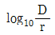
에 비례한다. 에 비례한다.
에 비례한다. 에 반비례한다.
에 반비례한다.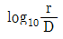
에 반비례한다.
(정답률: 72%)
30. 배전선로의 용어 중 틀린 것은?
- 궤전점 : 간선과 분기선의 접속점
- 분기선 : 간선으로 분기되는 변압기에 이르는 선로
- 간선 : 급전선에 접속되어 부하로 전력을 공급하거나 분기선을 통하여 배전하는 선로
- 급전선 : 배전용 변전소에서 인출되는 배전선로에서 최초의 분기점까지의 전선으로 도중에 부하가 접속되어 있지 않은 선로
(정답률: 60%)
31. 송전계통에서 발생한 고장 때문에 일부 계통의 위상각이 커져서 동기를 벗어나려고 할 경우 이것을 검출하고 계통을 분리하기 위해서 차단하지 않으면 안 될 경우에 사용되는 계전기는?
- 한시계전기
- 선택단락계전기
- 탈조보호계전기
- 방향거리계전기
(정답률: 60%)
32. 가공 송전선에 사용되는 애자 1연 중 전압부담이 최대인 애자는?
- 중앙에 있는 애자
- 철탑에 제일 가까운 애자
- 전선에 제일 가까운 애자
- 전선으로부터 1/4 지점에 있는 애자
(정답률: 73%)
33. 송전선에 복도체를 사용하는 주된 목적은?
- 역률개선
- 정전용량의 감소
- 인덕턴스의 증가
- 코로나 발생의 방지
(정답률: 74%)
34. 선간전압, 부하역률, 선로손실, 전선중량 및 배전거리가 같다고 할 경우 단상 2선식과 3상 3선식의 공급전력의 비(단상/3상)는?(오류 신고가 접수된 문제입니다. 반드시 정답과 해설을 확인하시기 바랍니다.)
- 1/3
- 1/√3
- √3
- √3/2
(정답률: 46%)
35. 송전선로의 중성점 접지의 주된 목적은?
- 단락전류 제한
- 송전용량의 극대화
- 전압강하의 극소화
- 이상전압의 발생방지
(정답률: 79%)
36. 전주사이의 경간이 80m인 가공전선로에서 전선 1m당의 하중이 0.37kg, 전선의 이도가 0.8m일 때 수평장력은 몇 kg 인가?
- 330
- 350
- 370
- 390
(정답률: 67%)
37. 수차의 특유속도 Ns를 나타내는 계산식으로 옳은 것은? (단, 유효낙차 : H[m], 수차의 출력 : P[kW], 수차의 정격 회전수 N[rpm]이라 한다.)
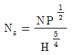
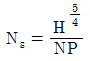
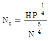
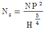
(정답률: 59%)
38. 고장점에서 전원측을 본 계통 임피던스를 Z[Ω], 고장점의 상전압을 E[V]라 하면 3상 단락전류[A]는?
- E/Z
- ZE/√3
- √3E/Z
- 3E/Z
(정답률: 53%)
39. 3상 계통에서 수전단전압 60kV, 전류 250A, 선로의 저항 및 리액턴스가 각각 7.61Ω, 11.85Ω 일 때 전압강하율은? (단, 부하역률은 0.8(늦음)이다.)
- 약 5.50%
- 약 7.34%
- 약 8.69%
- 약 9.52%
(정답률: 41%)
40. 피뢰기의 구비조건이 아닌 것은?
- 속류의 차단능력이 충분할 것
- 충격 방전 개시 전압이 높을 것
- 상용 주파 방전 개시 전압이 높을 것
- 방전 내량이 크고, 제한전압이 낮을 것
(정답률: 57%)
3과목: 전기기기
41. 유도전동기의 출력과 같은 것은?(문제 오류로 가답안 발표시 2번으로 발표되었지만 확정답안 발표시 2, 3번이 정답 처리 되었습니다. 여기서는 가답안인 2번을 누르면 정답 처리 됩니다.)
- 출력= 입력전압 - 철손
- 출력= 기계출력 - 기계손
- 출력= 2차입력 - 2차 저항손
- 출력= 입력전압 - 1차 저항손
(정답률: 72%)
42. 75W 이하의 소출력으로 소형공구, 영사기, 치과 의료용 등에 널리 이용되는 전동기는?
- 단상 반발전동기
- 영구자석 스텝전동기
- 3상 직권 정류자전동기
- 단상 직권 정류자전동기
(정답률: 69%)
43. 직류발전기를 병렬 운전할 때 균압선이 필요한 직류발전기는?
- 분권발전기, 직권발전기
- 분권발전기, 복권발전기
- 직권발전기, 복권발전기
- 분권발전기, 단극발전기
(정답률: 66%)
44. 병렬 운전하고 있는 2대의 3상 동기발전기 사이에 무효순환전류가 흐르는 경우는?
- 부하의 증가
- 부하의 감소
- 여자전류의 변화
- 원동기의 출력변화
(정답률: 65%)
45. 전압이나 전류의 제어가 불가능한 소자는?
- SCR
- GTO
- IGBT
- Diode
(정답률: 73%)
46. 전기자저항이 각각 RA=0.1Ω과 RB=0.2Ω 인 100V, 10kW의 두 분권발전기의 유기기전력을 같게 해서 병렬운전하여, 정격전압으로 135A의 부하전류를 공급할 때 각 기기의 분담전류는 몇 A 인가?
- IA=80, IB=55
- IA=90, IB=45
- IA=100, IB=35
- IA=110, IB=25
(정답률: 69%)
47. 다이오드를 사용한 정류회로에서 여러 개를 병렬로 연결하여 사용할 경우 얻는 효과는?
- 인가전압 증가
- 다이오드의 효율 증가
- 부하 출력의 맥동률 감소
- 다이오드의 허용전류 증가
(정답률: 59%)
48. △결선 변압기의 한 대가 고장으로 제거되어 V결선으로 공급할 때 공급할 수 있는 전력은 고장 전 전력에 대하여 몇 % 인가?
- 57.7
- 66.7
- 75.0
- 86.6
(정답률: 72%)
49. 변압기의 2차를 단락한 경우에 1차 단락전류 Is1은? (단, V1 : 1차 단자전압, Z1 : 1차 권선의 임피던스, Z2 : 2차 권선의 임피던스, Z : 부하의 임피던스 a: 권수비)
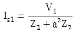
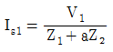
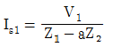
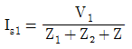
(정답률: 54%)
50. 직류 분권전동기에서 단자전압 210V, 전기자전류 20A, 1500rpm으로 운전할 때 발생 토크는 약 몇 Nm 인가? (단, 전기자저항은 0.15Ω이다.)
- 13.2
- 26.4
- 33.9
- 66.9
(정답률: 52%)
51. 220V, 50kW인 직류 직권전동기를 운전하는데 전기자 저항(브러시의 접촉저항 포함)이 0.⑤Ω이고 기계적 손실이 1.7kW, 표유손이 출력의 1%이다. 부하전류가 100A 일 때의 출력은 약 몇 kW인가?
- 14.5
- 16.7
- 18.2
- 19.6
(정답률: 34%)
52. 60Hz, 12극, 회전자의 외경 2m인 동기발전기에 있어서 회전자의 주변속도는 약 몇 m/s인가?
- 43
- 62.8
- 120
- 132
(정답률: 65%)
53. 변압기의 등가회로를 작성하기 위하여 필요한 시험은?
- 권선저항측정, 무부하시험, 단락시험
- 상회전시험, 절연내력시험, 권선저항측정
- 온도상승시험, 절연내력시험, 무부하시험
- 온도상승시험, 절연내력시험, 권선저항측정
(정답률: 67%)
54. 직류 타여자발전기의 부하전류와 전기자전류의 크기는?
- 전기자전류와 부하전류가 같다.
- 부하전류가 전기자전류보다 크다.
- 전기자전류가 부하전류보다 크다.
- 전기자전류와 부하전류는 항상 0이다.
(정답률: 60%)
55. 유도전동기의 특성에서 토크와 2차 입력 및 동기속도의 관계는?
- 토크는 2차 입력과 동기속도의 곱에 비례한다.
- 토크는 2차 입력에 반비례하고, 동기속도에 비례한다.
- 토크는 2차 입력에 비례하고, 동기속도에 반비례한다.
- 토크는 2차 입력의 자승에 비례하고, 동기속도의 자승에 반비례한다.
(정답률: 58%)
56. 농형 유도전동기의 속도제어법이 아닌 것은?
- 극수변환
- 1차 저항변환
- 전원전압변환
- 전원주파수변환
(정답률: 58%)
57. 220V, 60Hz, 8극, 15kW의 3상 유도전동기에서 전부하 회전수가 864rpm 이면 이 전동기의 2차 동손은 몇 W인가?
- 435
- 537
- 625
- 723
(정답률: 62%)
58. 2대의 동기발전기가 병렬 운전하고 있을 때 동기화 전류가 흐르는 경우는?
- 부하분담에 차가 있을 때
- 기전력의 크기에 차가 있을 때
- 기전력의 위상에 차가 있을 때
- 기전력의 파형에 차가 있을 때
(정답률: 63%)
59. 선박추진용 및 전기자동차용 구동전동기의 속도제어로 가장 적합한 것은?
- 저항에 의한 제어
- 전압에 의한 제어
- 극수변환에 의한 제어
- 전원주파수에 의한 제어
(정답률: 60%)
60. 변압기에서 권수가 2배가 되면 유기기전력은 몇 배가 되는가?
- 1
- 2
- 4
- 8
(정답률: 61%)
4과목: 회로이론
61. r[Ω]인 6개의 저항을 그림과 같이 접속하고 평형 3상 전압 E를 가했을 때 전류 I는 몇 A인가? (단, r=3Ω, E=60V 이다. )
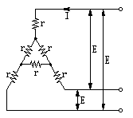
- 8.66
- 9.56
- 10.8
- 12.6
(정답률: 60%)
62. 다음 중 정전용량의 단위 F(패럿)와 같은 것은? (단, C는 쿨롱, N은 뉴턴, V는 볼트, m은 미터이다.)
- V/C
- N/C
- C/m
- C/V
(정답률: 59%)
63. 다음과 같은 Y결선 회로와 등가인 △결선 회로의 A, B, C 값은 몇 Ω 인가?
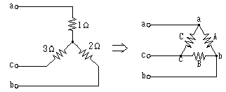
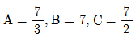
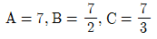
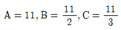
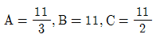
(정답률: 66%)
64. 회로의 전압비 전달함수
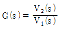
는?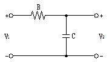
- RC
- 1/RC
- RCs+1
- 1/RCs+1
(정답률: 68%)
65. 측정하고자 하는 전압이 전압계의 최대 눈금보다 클 때에 전압계에 직렬로 저항을 접속하여 측정 범위를 넓히는 것은?
- 분류기
- 분광기
- 배율기
- 감쇠기
(정답률: 75%)
66. 그림과 같이 주기가 3s인 전압 파형의 실효값은 약 몇 V인가?
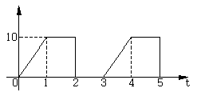
- 5.67
- 6.67
- 7.57
- 8.57
(정답률: 53%)
67. 1mV의 입력을 가했을 때 100mV의 출력이 나오는 4단자 회로의 이득[dB]은?
- 40
- 30
- 20
- 10
(정답률: 56%)
68. 다음과 같은 회로에서 t=0인 순간에 스위치 S를 닫았다. 이 순간에 인덕턴스 L에 걸리는 전압[V]은? (단, L의 초기전류는 0이다.)
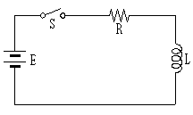
- 0
- LE/R
- E
- E/R
(정답률: 50%)
69. f(t)=3u(t)+2e-t인 시간함수를 라플라스 변환한 것은?
(정답률: 61%)
70. 비정현파 f(x)가 반파대칭 및 정현대칭일 때 옳은 식은? (단, 주기는 2π 이다. )
(정답률: 51%)
71. 의 시간함수 f(t)는 어느 것인가?
- 2etcos2t
- 2etsin2t
- 2e-tcos2t
- 2e-tsin2t
(정답률: 55%)
72. 그림과 같은 회로에서 스위치 S를 닫았을 때 시정수[sec]의 값은? (단, L=10mH, R=20Ω 이다.)
- 200
- 2000
- 5×10-3
- 5×10-4
(정답률: 60%)
73. 대칭 10상 회로의 선간전압이 100V 일 때 상전압은 약 몇 V 인가? (단, sin18°=0.309이다.)
- 161.8
- 172
- 183.1
- 193
(정답률: 38%)
74. 회로에서 단자 1-1'에서 본 구동점 임피던스 Z11은 몇 Ω 인가?
- 5
- 8
- 10
- 15
(정답률: 67%)
75. 어느 회로망의 응답 의 라플라스 변환은?
(정답률: 51%)
76. R=50Ω,L=200 mH의 직렬회로에서 주파수 f=50 Hz의 교류에 대한 역률[%]은?
- 82.3
- 72.3
- 62.3
- 52.3
(정답률: 55%)
77. 그림과 같은 e=Emsinωt인 정현파 교류의 반파정현파형의 실효값은?
- Em
- Em/√2
- Em/2
- Em/√3
(정답률: 53%)
78. 대칭 3상 교류전원에서 각 상의 전압이 va, vb, vc일 때 3상 전압[V]이 합은?
- 0
- 0.3va
- 0.5va
- 3va
(정답률: 70%)
79. 전압 e=100sin10t+20sin20t[V]전류 i=20sin(10t-60°)+10sin20t[A] 일 때 소비전력은 몇 W 인가?
- 500
- 550
- 600
- 650
(정답률: 61%)
80. RLC 직렬회로에서 공진 시의 전류는 공급전압에 대하여 어떤 위상차를 갖는가?
- 0°
- 90°
- 180°
- 270°
(정답률: 55%)
5과목: 전기설비기술기준 및 판단 기준
81. 철근 콘크리트주로서 전장이 15m이고, 설계하중이 8.2kN 이다. 이 지지물을 논이나 기타 지반이 연약한 곳 이외에 기초안전율의 고려없이 시설하는 경우에 그 묻히는 깊이는 기준보다 몇 ㎝를 가산하여 시설하여야 하는가?
- 10
- 30
- 50
- 70
(정답률: 63%)
82. 금속관 공사에 의한 저압 옥내배선 시설에 대한 설명으로 틀린 것은?
- 인입용 비닐절연전선을 사용했다.
- 옥외용 비닐절연전선을 사용했다.
- 짧고 가는 금속관에 연선을 사용했다.
- 단면적 10mm2 이하는 전선을 사용했다.
(정답률: 69%)
83. 전가섭선에 관하여 각 가섭선의 상정 최대장력의 33%와 같은 불평형 장력의 수평 종분력에 의한 하중을 더 고려하여야 할 철탑의 유형은?
- 직선형
- 각도형
- 내장형
- 인류형
(정답률: 64%)
84. 케이블 트레이공사에 사용되는 케이블트레이가 수용된 모든 전선을 지지할 수 있는 적합한 강도의 것일 경우 케이블 트레이의 안전율은 얼마 이상으로 하여야 하는가?
- 1.1
- 1.2
- 1.3
- 1.5
(정답률: 62%)
85. 고압 가공전선로에 케이블을 조가용선에 행거로 시설할 경우 그 행거의 간격은 몇 ㎝ 이하로 하여야 하는가?
- 50
- 60
- 70
- 80
(정답률: 53%)
86. 케이블 공사에 의한 저압 옥내배선의 시설방법에 대한 설명으로 틀린 것은?
- 전선은 케이블 및 캡타이어케이블로 한다.
- 콘크리트 안에는 전선에 접속점을 만들지 아니한다.
- 400V 미만인 경우 전선을 넣는 방호장치의 금속제 부분에는 제3종 접지공사를 한다.
- 전선을 조영재의 옆면에 따라 붙이는 경우 전선의 지지점 간의 거리를 케이블은 3m 이하로 한다.
(정답률: 56%)
87. 교통신호등 제어장치의 금속제 외함에는 몇 종 접지공사를 하여야 하는가?(관련 규정 개정전 문제로 여기서는 기존 정답인 3번을 누르면 정답 처리됩니다. 자세한 내용은 해설을 참고하세요.)
- 제1종 접지공사
- 제2종 접지공사
- 제3종 접지공사
- 특별 제3종 접지공사
(정답률: 59%)
88. 태양전지 발전소에 태양전지 모듈 등을 시설할 경우 사용 전선(연동선)의 공칭단면적은 몇 mm2 이상인가?
- 1.6
- 2.5
- 5
- 10
(정답률: 59%)
89. 특고압 가공전선과 저압 가공전선을 동일 지지물에 병가하여 시설하는 경우 이격거리는 몇 m 이상이어야 하는가? (문제 오류로 실제 시험에서는 모두 정답처리 되었습니다. 여기서는 1번을 누르면 정답 처리 됩니다.)
- 1
- 2
- 3
- 4
(정답률: 71%)
90. 변압기의 고압측 1선 지락전류가 30A인 경우에 제2종 접지공사의 최대 접지저항 값은 몇 Ω인가? (단, 고압측 전로가 저압측 전로와 혼촉하는 경우 1초 이내에 자동적으로 차단하는 장치가 설치되어 있다.)
- 5
- 10
- 15
- 20
(정답률: 28%)
91. 전광표시 장치에 사용하는 저압 옥내배선을 금속관 공사로 시설할 경우 연동선의 단면적은 몇 mm2 이상 사용하여야 하는가?
- 0.75
- 1.25
- 1.5
- 2.5
(정답률: 37%)
92. 고압 가공전선로에 사용하는 가공지선은 인장강도 5.26kN 이상의 것 또는 지름이 몇 mm 이상의 나경동선을 사용하여야 하는가?
- 2.6
- 3.2
- 4.0
- 5.0
(정답률: 53%)
93. 전력보안 통신용 전화설비를 시설하지 않아도 되는 것은?
- 원격감시제어가 되지 아니하는 발전소
- 원격감시제어가 되지 아니하는 변전소
- 2 이상의 급전소 상호 간과 이들을 총합 운용하는 급전소 간
- 발전소로서 전기 공급에 지장을 미치지 않고, 휴대용 전력보안통신 전화설비에 의하여 연락이 확보된 경우
(정답률: 69%)
94. 지중 전선로의 시설방식이 아닌 것은?
- 관로식
- 압착식
- 암거식
- 직접매설식
(정답률: 66%)
95. 지중 전선로에 사용하는 지중함의 시설기준으로 틀린 것은?
- 조명 및 세척이 가능한 장치를 하도록 할 것
- 그 안의 고인 물을 제거할 수 있는 구조일 것
- 견고하고 차량 기타 중량물의 압력을 견딜수 있을 것
- 뚜껑은 시설자 이외의 자가 쉽게 열 수 없도록 할 것
(정답률: 70%)
96. 특고압 가공전선은 케이블인 경우 이외에는 단면적이 몇 mm2 이상의 경동연선이어야 하는가?
- 8
- 14
- 22
- 30
(정답률: 61%)
97. 345kV 변전소의 충전 부분에서 6m의 거리에 울타리를 설치하려고 한다. 울타리의 최소 높이는 몇 m 인가?
- 2
- 2.28
- 2.57
- 3
(정답률: 57%)
98. 자동 차단기가 설치되어 있지 않는 전로에 접속되어 있는 440V 전동기의 외함을 접지할 때, 접지저항 값은 몇 Ω 이하이어야 하는가?(관련 규정 개정전 문제로 여기서는 기존 정답인 2번을 누르면 정답 처리됩니다. 자세한 내용은 해설을 참고하세요.)
- 5
- 10
- 30
- 50
(정답률: 58%)
99. 최대사용전압이 23000V인 중성점 비접지식 전로의 절연내력 시험전압은 몇 V 인가?
- 16560
- 21160
- 25300
- 28750
(정답률: 50%)
100. 다음 괄호 안에 들어갈 내용으로 옳은 것은?(관련 규정 개정전 문제로 여기서는 기존 정답인 2번을 누르면 정답 처리됩니다. 자세한 내용은 해설을 참고하세요.)
- 4.5
- 5
- 5.5
- 6
(정답률: 48%)